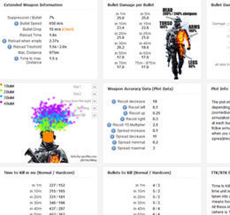
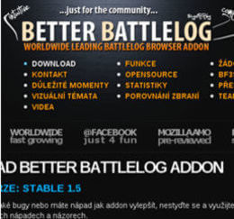
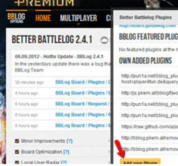
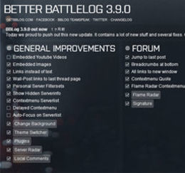
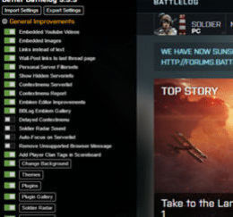
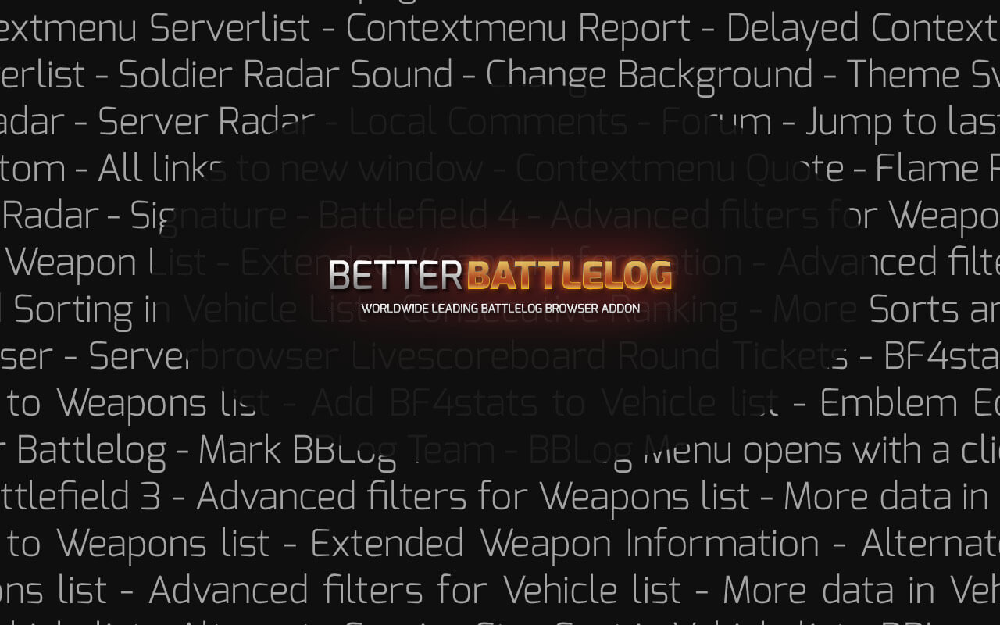

It was a pleasure, a honor, simply a great time!
December 2011 - May 2018
Thank you. Thank you to all team members.
Thank you to all contributors and fans.
Thank you to all that used this addon.
What was before?
Where is the extension?
The extension is still online
here.
Facts
- countless hours for development, cups of coffee and cans of red bull -
- 30.000 unique users a day / 1000+ online at the same time -
- over 6.500.000 downloads -
- 10.000 uploaded emblems, used over 200.000 times -
- 102 versions of the addon -
- 34 official bblog plugins created by the community -
- 20 official bblog themes created by the community -
- 1.800+ topics / 12.000+ posts in the forums -
- more than 7000 battle reports saved as pdf with bblog -
- translated into 9 languages with 10.000+ lines of text -
Team
Brain Foo Long
Creator and developer from start to end
Austria - 30 years old (in 2016)
-Quote-
" Started with a single idea, ended in a huge project. Used worldwide and in multiple languages. I'm
thankful for the great time. I've learned much and worked together with lots of people around the world.
"
ORFK / M. Pal
Global mod / Beta testing / "Thinktank" from start to end
Switzerland - 27 years old (in 2016)
-Quote-
" You had a great idea. I wanted to support you in testing, brainstorming, user friendliness and in
community issues because of my experiences with GTA projects. Now i spend a lot of time with
motorcycling, adventure trips and intensive crossfit training. My big goal are the crossfit games. "
Adriano "-M-lNano"
Firstly as Portuguese Translator, later as Global Mod, from start to end
Rio de Janeiro/Brazil - 30 years old (in 2016)
-Quote-
" I think it's a good project/tool and with a good chance to be awesome. I'll continue to support free
and opensource projects, with localization, code or just my time. "
Danila / Daniel
Translator, plugin developer and community manager, Onboard since Oct. 2014
Russia
-Quote-
" It was a very nice experience for me. After this project i will try to improve new forum and continue
support the community. Thank you all very much! "
Meaurk / Mark
Dutch translator, beta tester, global moderator, Onboard since April 2012
The Netherlands - 24 years old (in 2016)
-Quote-
" The lacks of Battlelog's were filled by BBLog's functions. I liked the idea of bringing something
fresh and snippy to Battlelog. I think that task of BBLog was completed with utmost sophistication.
After the growth of BBLog, the team got bigger and bigger with an awesome group of backers. I really
enjoyed my time in this team. :-) "
ArnoldLayne-xXx
Portuguese translator, Onboard since Feb. 2014
Rio de Janeiro/Brazil - 32 years old (in 2016)
-Quote-
" I love projects and i love to help. Its open source and needs localization to be better... so i'm here
to try my best. "
xXJumpyXx / Kim
Translator, Beta Tester, Global Moderator, Theme Creator, Onboard Feb. 2012 - April 2014
Sweden - 22 years old (in 2016)
-Quote-
" I wanted to give back as a way to say thanks for BBLog, so I decided to join the team and help out in
whichever way I could. During my time with BBLog, I also found a new hobby which I still tinker with
today - CSS. I had a great time with BBLog, it's a great project with an even greater community and team
:) "
seniledawdler / twoodts
Theme developer, Onboard Feb. 2012 - April 2014
Finland - 33 years old (in 2016)
-Quote-
" Better Battlelog has been a really awesome as Battlelog itself was/is sorely lacking in many wonderful
features this plugin boasts. As a graphic designer the clan logo upload feature was the one that hooked
me and later the theme customization that really got me on board. A big thank you to everyone for making
Better Battlelog the amazing product it is. "
dapil / Daniel Peukert
Plugin developer and translator, Onboard since November 2012
Czechia - 19 years old (in 2018)
-Quote-
" I don't play games much anymore, but this amazing project has basically changed my life. It all
started
when I was trying to fix a plugin to work with a newer version of BBLog. That sparked my interest in
Javascript and I started learning it and web development in general, which became my hobby and
eventually
turned into a job. The community here has been brilliant and I want to thank everyone for making BBLog
what
it was. "
There where/are much more team members.
Unfortunately there is no detailed information available.
Just a list of all known team members of function.
Amkhatar
Theme Developer/Translator - Onboard since Augst 2012 Created the final design of
getbblog.com
José Ortega
Global moderator - Onboard since April 2012 or before
Dendari
Translator - Onboard since April 2012 or before
Juress
Theme Developer / Translator - Onboard since April 2012 or before
Kulczakk
Translator - Onboard since October 2013
I-MrFixIt-I
Plugin Developer - Onboard since Jan. 2016
Symthic
Helping Hand - symthic.com admin
1April
Helping Hand - bf3stats.com and bf4stats.com admin
And even more...
AimNut
bartez300
GenericRandom
Hille
LeHvass
Patschi
Pun1a
RenjiNSK
ThePredatoR
Xan
And all the i've forgotten
Screenshots
Awesome BF3 weapon stats

Former getbblog.com design

Version 2.x with MOH:W

Version 3.x with BF4 support

Version 4.x with BFH - the final

It is impossible to make pictures of all features of BBLog :)
In the last version, we had over 100 features.
Here is a small set of things we've done.

Thank you.
This is the end.
Finally.
If i have forgotten anything, sorry for that.
It was a long journey.
I wish you all a good life.
Greetz BrainFooLong - Roland Eigelsreiter